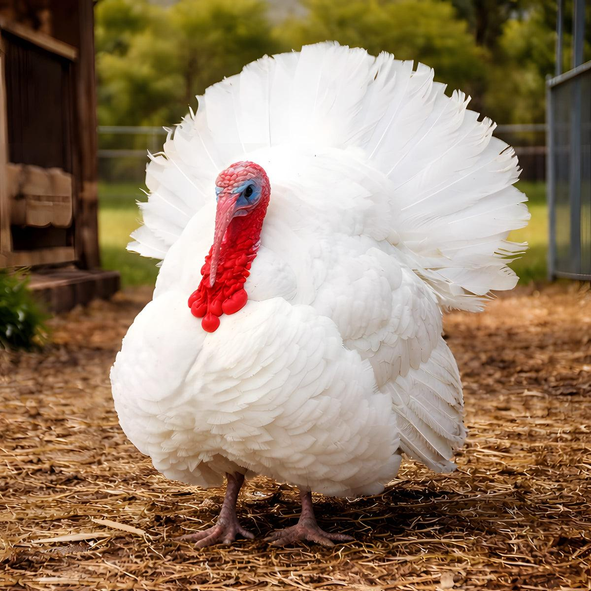

🌎 País de origen
India (base genética)
📖 Historia
El pavo de doble pechuga fue desarrollado mediante selección genética para aumentar la cantidad de carne en el pecho. Es una de las variedades más utilizadas en la producción comercial de carne debido a su rápido crecimiento y gran rendimiento.
✨ Datos curiosos
- Puede producir una cantidad de carne de pechuga mucho mayor que los pavos tradicionales.
- Debido a su gran tamaño, muchos ejemplares no pueden reproducirse de forma natural y requieren inseminación artificial.
📸 Ejemplares de nuestra granja


⭐ Calificación de visitantes
⭐⭐⭐⭐⭐
Esta especie es una de las favoritas de los visitantes de La Granja de Gregori.